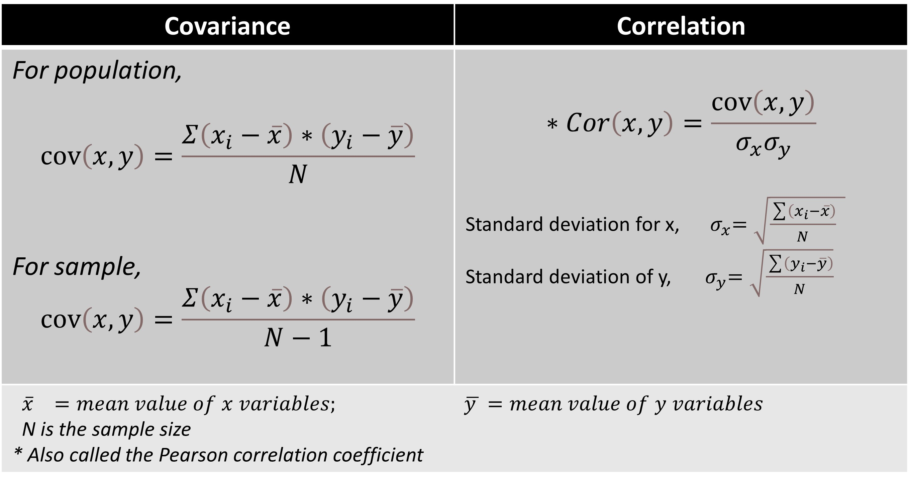
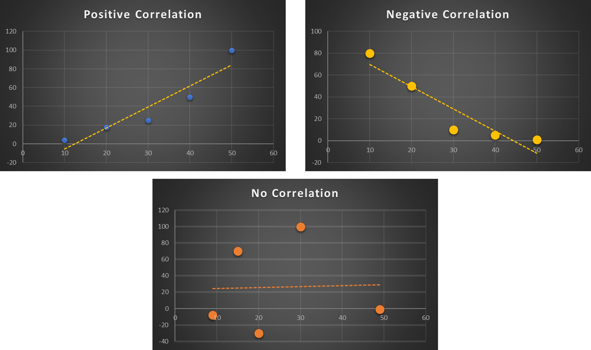

The key to materials development and design is to study the interdependence of the factors (processing, structure, properties, performance) connecting the vertices of the materials tetrahedron. These parameters are measured/calculated, and the corresponding data are usually represented using tables/ graphs/ plots. But what is more important for materials scientists and engineers is to view the degree of dependence of these data in one frame for the development and designing of materials for various applications.
Here comes the role of heatmap, exemplifying the effectiveness in serving the purpose. Heatmaps are color-coded based on values, providing an overview at a glance.
I will demonstrate the coding steps to generate such heatmaps using Python libraries along with the interpretation of the relations between variables with an example. But before that let us get acquainted with two important terminologies closely associated with the activity on heatmaps.
Covariance gives the direction of the relationship between variables, and its value is unbounded ranging from -∞ to +∞. On the other hand, correlation provides both direction and normalized magnitude of the strength of relationships between the variables. The values of correlation are bounded between -1 and +1.
Mathematical expressions for covariance and correlation are shown in the table below.
We can see that correlation is basically a scaled version of covariance.

Types of CorrelationNow, let’s get started with the steps for generation of heatmap.
About the dataset: I have taken a dataset containing room temperature values of thermoelectric properties - Seebeck coefficient (S), electrical conductivity (sigma, σ), thermal conductivity (kappa, κ) and performance factor (ZT). The three properties and ZT hold the following relation:

From a correlation perspective,
Knowing the dataset and relations between the variables, we now proceed to load the same after importing the relevant libraries.
import numpy as np
import pandas as pd
from matplotlib import pyplot as plt
from matplotlib.pyplot import figure
import seaborn as sns
ds = pd.read_csv('TE_props_correlation1.csv')
df=pd.DataFrame(ds)
dfI will demonstrate three Python-based methods for heatmap generation and visualization.
The correlation heatmap displayed is generated using Pandas's corr( ) function. The heatmap is a graphical representation of the correlation matrix. By default, the Pearson method is used to compute Pearson correlation coefficients.
matrix= df.corr()
matrixOutput:The heatmap
Now, let us interpret the correlation matrix obtained.
As mentioned previously, the values of the coefficients lie between -1 and +1. Coefficients with positive values imply direct proportionality between the variables. Conversely, negative values of coefficients indicate inverse proportionality between variables. I made a qualitative representation of the above map for a quick overview of the trend in pairwise relations between variables (properties, and ZT in this case).
Take a row and correlate the row variable (shown on the left) with each column variable. For instance, in the first row,
Similarly, we can infer that ZT, or the performance factor has a positive correlation with Seebeck and a negative correlation with kappa following the equation defining it. Further, kappa and sigma show a positive correlation, validating the Wiedmann Franz law.
We use the heatmap( ) function to generate the heatmap.
heatmap_seaborn = sns.heatmap(matrix, annot=True, linewidth = 0.5, linecolor='black', cmap='rocket')We can observe the same trend of correlation coefficients as seen in Pandas.
You can also generate the heatmap with coefficient values using the plotly.express module (usually imported as px). The advantage of this module is that it can create the required figure at one go.
!pip install Plotly
import plotly.express as px
fig = px.imshow(matrix, text_auto=True)
fig.show()Color-coded heatmaps displaying the correlation coefficients between variables provide quick insight and help in decision-making. Materials scientists and engineers can discern the trends and patterns between different properties and parameters, accelerating materials design and development.
Access the reference for the dataset and the entire code here.
Privacy policy| Materials Data Explorer by Joyita Bhattacharya is licensed under CC BY-SA 4.0